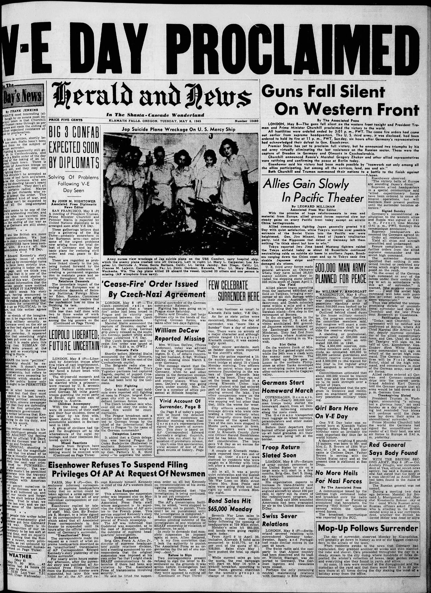
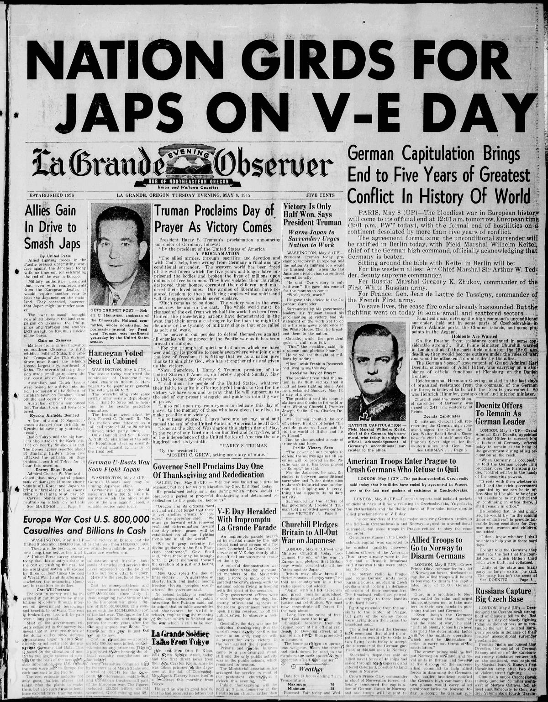
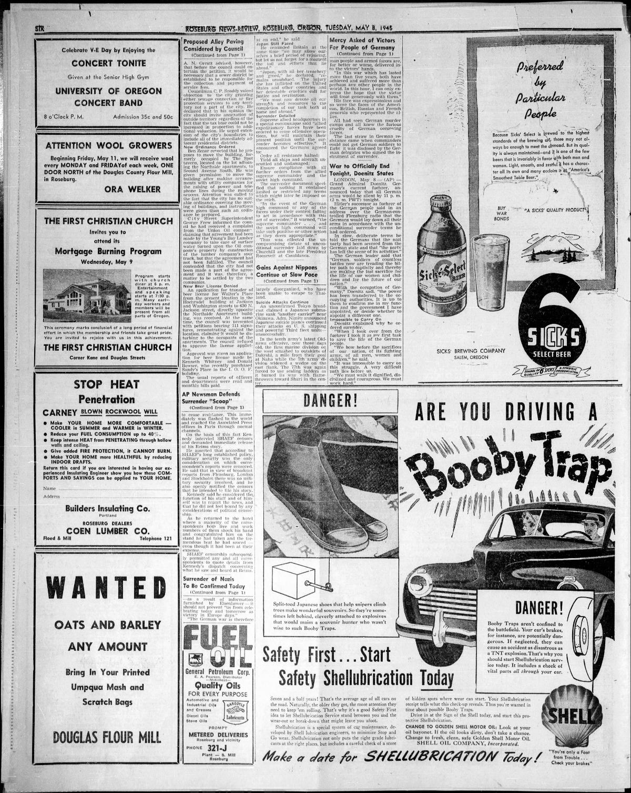

HN HN-549 · May 8, 1945 · War, Conflict & Security > Wars, Battles & Campaigns > Declarations of war, ceasefires and surrender
Source: Indianapolis Times, p. 1 — original page; U.S. National Archives, German surrender.
Report: The paper presented photographs of the German surrender delegation and the warning “Victory Half Won†as Europe celebrated the end of the war against Germany.
Assessment: May 8 is V-E Day, marking Nazi Germany's surrender in Europe. Japan had not yet surrendered, so an unqualified “World War II ended May 8†would be false. Germany's military surrender in May also preceded the later Nuremberg criminal proceedings.
Authentic scans retrieved from Historic Oregon Newspapers (University of Oregon). Article crops are located using the archive's own OCR word coordinates and rendered at native crop resolution; page scans are reduced-size access renditions. No images were generated, mocked, or retouched.



Not yet acquired. Queued for provider-specific acquisition testing (see source-acquisition manifest).
URL (preserved verbatim): https://newspapers.library.in.gov/?a=d&d=IPT19450508.1.1
Saved research report: Historical_Newspaper_Event_Research_528-552_2026-10-23.md
Evidence note: A newspaper report means a historical publication made a claim; it does not establish that claim as fact. Contemporary reporting is separated from later scholarly context and our own assessment.